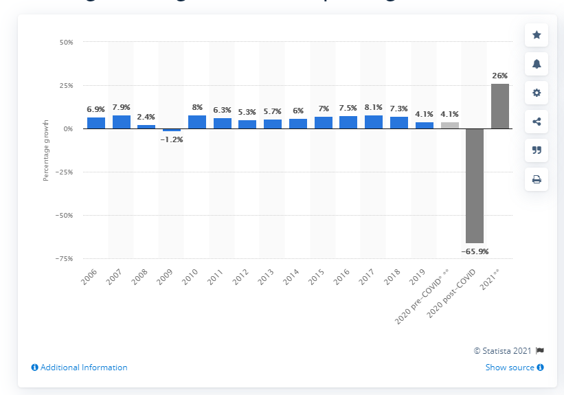

For these talented Children of Ufa
Air passenger growth, fatality, and Überlingen mid-air collision

Today and yesterday I have scrutinized cargo airlines operations and economics and have written one article not still published because lacking some piece of chart that I have to make. While browsing I decided to watch this wonder’s documentary about this emotive airline fatality that was the collision of the Tupolev Flight 2937 and this DHL cargo Flight 611 at Uberlingen.
I was writing about airlines accidents days ago because I am working and trying to highlight some facts about airlines accidents using past causes and aircraft information. When I saw this documentary recommended to me by youtube I just said to myself let’s look again an airline accident documentary maybe I will get another insight for this small study I am doing with airline accidents and for this game idea I have about past airlines accidents. But this last airline accident I watched affected me because many talented children were involved and the fact that it was a collision between two aircraft made it more difficult for me to consume because now with the progress we have made in collision detection certainly helps avoid this kind of situation. To say that we who are living today fly safer than those who did in the past. I hope that we will work hard to make airline safer by always remembering these talented children that passed away because we had not a tech-enabled solution that could prevent aircraft collisions with a high probability of success. I am not trying to renew a wound for all these families but rather to show that there are people out there who also empathize with them.
What I have also remarked today is that the number of aircraft accident seem to correlate with the growth of the number of passenger meaning the growth of the number of flight like increasing the number of flights was increasing the probability of an accident. It is very mathematically obvious but for sure we can build a safer network where the growth of traffic doesn't mean an increase in the number of accidents and it seems also for me that is what is happening years from now with few other years as exceptions.
Annual growth in global air traffic passenger demand from 2006 to 2021

Number of worldwide air traffic fatalities from 2006 to 2020*
We can see that in 2028, 2014, 2006 there was many air traffic fatality and curiously in these year number of passenger growth were also high, always above 5%.
The small study about airline accidents that I was writing about here was not about this fact but about another discovery that I am trying to highlight with data that I am collecting but this fact about a possible relation between air passenger growth and air fatality was easier to highlight with few data that’s why I decided to write it and share it right now while emotively contributing to the memory of these talented children and these cargo pilots who passed away because we were not technologically ready and for telling us to always work harder to make air traffic safer and more worth experiencing.
All my mind goes to these children like how